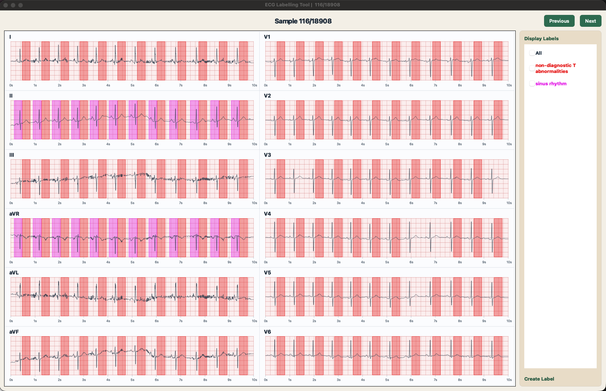

See the complete picture
A two-column, twelve-lead overview fits the window. Move between samples and keep your place with the sample counter.
12 leads · no scrolling
See the whole recording. Inspect the details.
Review and refine ECG annotations in one desktop workspace.
See the app’s recording overview
with annotation spans and label controls.

Select a lead to inspect its waveform.
Then try annotations or interval measurement.
A browser demonstration of the workflow. The desktop app provides the annotation editing tools.
A two-column, twelve-lead overview fits the window. Move between samples and keep your place with the sample counter.
Open an individual lead. Create a span, move it, resize its boundaries, or remove it. Toggle labels to focus your review.
Measure time between points. Mark first and last spans, then use Uniform Fill to distribute repeated annotations.
The desktop app reads ECG recordings and labels from a local sample folder. Changes are saved to the annotation files, so your review stays with the recording.
sample/
├── labels.json
└── group/
└── record/
├── record.hea
├── record.dat
└── label.jsonKeep the folder beside the packaged app.
Record filenames match their folder name.
Run from source, or use a packaged desktop build.
Packaged app users do not need Python.
No. This page generates synthetic signals and runs entirely in your browser. Use the desktop app to review and save your own annotation files.
The sample folder contains labels.json and group/record subfolders. Each recording has WFDB .hea and .dat files plus label.json. The current app uses a 500 Hz sample rate.
Yes. A packaged desktop build includes Python and its dependencies. Keep the sample folder beside the app, and keep _internal beside the executable in a Windows build. Build each platform’s package on that platform.